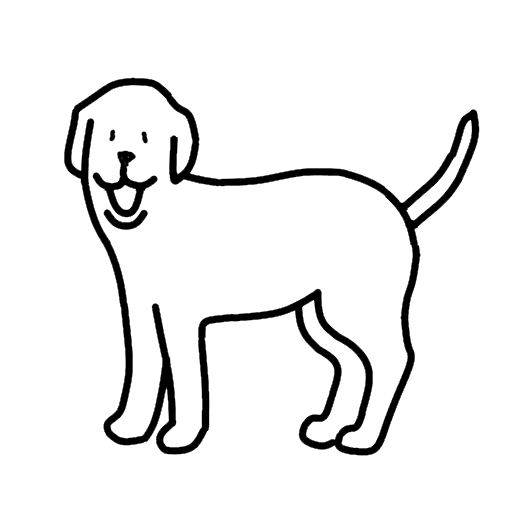

かならずお読みください→
サウンドスイッチの機能拡張
声で複数のスイッチを使い分けるにはどうしたらいいか
今回の話は長いです
『こえをかけるとへんじをするしろいいぬ』の試作品をすこしまえに紹介しました。またそこで使用したサウンドスイッチの基本的な原理についてもお話ししました。そしてこれに改良を加えて音の長さや回数で異なる反応をする試作品も紹介しました。この間だんだんレベルが上がってきましたので複雑な話が増えていますが、どうもすみません。それはともあれ試作品はいかがだったでしょうか？完成度はまだまだ高くはありませんが、いろいろな用途への応用が期待できそうでこれから楽しみです。
今回のシリーズは『おもちゃ作り』がテーマですので、タブレットでも使えるようにプログラムでサウンドスイッチを作りました。ソフトウエアは手作り工作の場合とは異なり多種類の試作ソフトを比較的少ない負担で作ることができます。これは類似の書類を何種類も作る際にワープロならずいぶん楽になるのと同じ話です。また、ソフトならコピーして誰かにあげるのも簡単で、ホームページに載せればほしいひとに持ち帰ってもらうのも手間がかかりません。そこで多くの人に関心を持ってもらえるように、プログラミングの話をできるだけ入れるようにしています。
なおここで紹介しているプログラムはあまり立派なものではありませんが、どなたでも自由に使ったり、まねしたり、改造したり、再配布してかまいませんのでどうぞお好きなようになさってください。その際の『許可』なども不要です。
このサイトへおいでの皆さんは、いくらかでもプログラムに関心をお持ちだろうと思います。しかしなかには経験が少なく関心もほどほどのひともいるかもしれません。そこですこし簡単なプログラムのお話を私なりにしてみたいと思います。しばらくお付き合いください。
まず、プログラムは人とコンピュータの共通語です。これまで何回か紹介したようにプログラムはある規則にそって文字を並べて入力したファイルです。つまりワープロで作った文書みたいなものです。このファイルをパソコン、スマホ、タブレットなどに読み込ませます。このプログラムをうごかすと、（うまくできていれば）思い取りの作業をさせることができます。例えばいぬが歩いたり、吠えたりするわけです。
違うことをさせたい場合は、プログラムを書き換えます。ある程度の技能と経験が必要ですが、これができると細かな部分の変更や調整もできるようになります。ここが不自由のあるひとのための道具には一番苦労する難関です。またここは挫折と失敗と資金難の名所です。この難所を突破するためには、プログラムで思い通りに動かせる情報機器（パソコンやスマホやタブレットなど）の力が必要だと考えて取り組みを進めています。例えば私の場合、この結果お金の心配は少なくなったことが一番の収穫です。
おもちゃ１５の『こえをかけるとへんじするしろいいぬ』の試作品では、マイクで声や音をとらえるといぬが『わん』となきました。これはマイクでとらえた音声の大きさで、スイッチをオンオフする仕組みです。この試作品では1つのスイッチが操作できます。 おもちゃ１６では、このサウンドスイッチがどのように作られているかを説明しました。
つぎに複数のスイッチを使うためにやや複雑な声を使う工夫を考えてみました。おもちゃ１７では、声の長さや回数で区別する2種類の試作品を紹介しました。 さて、今回はこれら2種類の試作品がどのように考えて作られているのか、ワンスイッチの試作品にどのような工夫を付け加えたのかを説明しようと思います。
声や音のみで複数のスイッチを使い分ける方法について考えてみました。シンプルな方法として次の３つが考えられます。
もしかしたら、ここで「スイッチ１ オン」や「スイッチ２ オフ」といった言葉でスイッチ操作できないかとお考えになる方もおられるかもしれません。これは『音声認識』と呼ばれる技術ですでに実用化されています。例えばスマホを声で操作できるのはこの技術を使っているからです。もしこのような「はっきりした言葉」を使える場合はまず『音声認識』をご検討したいものです。
ここで説明しているサウンドスイッチは、『あー』などの言葉にならない声や『舌打ち』などの音を利用してスイッチ操作を考えています。 またスキャン方式は表示や視覚も関係しますし、声や音のみということで除外しました。
さて１番目の方法、音の大きさはアイデアとしては有望そうに思えます。大きな声ならこのスイッチ、小さな声ならあのスイッチという具合です。しかしただ思っているだけでは話が先に進みません。まず『任意の音量を随意的に出せるか』と『何種類大きさの声を出せるか』を自分で確認してみることにしました。
サウンドスイッチのサンプルプログラムで説明しましたが、このプログラムの音量計測には、getLevel()が使われています。getLevel()はマイク音量を、0から10の値で返してくれます。この値を用いて音の大きさの判定もしていますし、グラフ表示にもこの値を使っています。ですので音量確認のためにサンプルの音量表示グラフを利用することにしました。
まず音量表示グラフをみながら声を出す練習をしました。しばらくがんばるとおおよそねらった音量の声を出せるようになりました。 そこで次は目で見て音量調整できないようにグラフを隠して発声し、その直後にグラフを確認する手順で練習してみました。すると今度はねらいの声が出ません。特に何秒か休憩したあとでもう一度同じ声を出そうとしてもほとんどうまくいきません。また同じ大きさの声を何回か区切って出そうとした場合も、あとでグラフを確認すると音量グラフが大きく上下して一定ではありませんでした。
どうやら、声の大きさについて正しく記憶することも、その記憶によって同じ大きさの声を別のときにだすこともどうもうまくいかないようです。 もしかしたら声の相対的大きさを調整すること（より大きな声を出す。より小さな声を出す）はできても絶対的大きさを調整すること（何dB（デシベル:音の大きさの単位）の声を出す。）のは人間は苦手なようです。
もしこれが正しいなら、『あのとき大きな声で怒鳴った。』『いやそんな大声はだしていない。』といった言い争いがおきる理由も理解できます。 このようなわけで、再現性がイマイチの声の大きさで区別する方法は見込みが薄いのではないかと考えるようになりました。
後日改めてこれについて考えてみました。その結果これは人間の聴覚の特性が原因ではないかと思うようになりました。大きな音を聞き続けると大きな音に慣れて苦痛は減り聞き取れるようになりますが、その代わりに音の大きさはわかりにくくなります。人間は目標の音の相対的変化を敏感に捉えるために、可聴範囲（マイクのボリューム調整に相当）を自動的に調整して大きな音から小さな音まで幅広くよく聞こえる工夫を（多分脳のなかで）しているのではないだろうかと考えました。そのため絶対的な音量はどうも把握しにくくなったと想像できます。これと同じく、しばらくすると慣れる特性は、視覚や嗅覚にもあります。そこで試しに『聴覚 順応』で検索すると、耳鼻科方面の方々の解説記事が何件も見つかりました。ほぼ大筋でこの考えは間違っていないようです。 これで、声の大きさで区別する1番目の方法は、努力や苦労が報われにくいことがわかります。
続いて２番目の長さで判別する方法について考えてみましょう。前の音の大きさについてを試すときは運よく既に作った試作品がそのまま使えました。ラッキーでした。さて続いて音の長さにについても試してみたいと思いますが、そのためには音の長さを検知できるように自分でなんとかしなくてはなりません。声の長さを知るためには、声の始まりとおわりを検知してその間の時間を計測する必要があります。
ここで音の長さを計測するにはいくつかの手順が必要になります。まず、マイクの音量を一定間隔で連続して計測します。そして音量がある基準値を超えた場合、『音あり』とします。また下回った場合は、『音なし』とします。 ここで音なしから音ありに変化したところが音のはじまり、音ありから音なしに変化したときが音のおわりと判断できます。そして両者で時間を計測して。その差を求めれば、音が出た時間が求められます。
この時間は音計測の時間間隔の倍数になりますので、高精度の計測結果が必要なら、高周波の計測をしておく必要があります。ここで結果は精度が良ければ良いほどいいなどと考えると、地球環境によろしくありません。北欧女子に叱られます。電卓の結果を全桁書いちゃう人は気をつけましょう。
この文章をプログラムに翻訳します。（和文英訳みたいなものです）
なおこのプログラムを動かすには、下記の７つのファイルを任意の場所に準備する必要があります。
js/graph.js （この記述はフォルダjsの中にgraph.jsがあるという意味）
index.html
dog2.mp3
dog4.mp3
dogde.gif
dogf.gif
sketch.js
そしてsketch.jsは以下の通り
let mic;
let isGetting = false;
let h;
let Lev0 = false;
let start;
let end;
function setup() {
const fr = 10; // 毎秒10フレーム
frameRate(fr);
const canvas = createCanvas(300, 200);
canvas.parent('sketch-holder');
// AudioInオブジェクトを作成
mic = new p5.AudioIn();
// キャンバスのクリックで、マイク入力取得のオン/オフを切り替える
canvas.mouseClicked(toggleMic);
h = height;
textSize(20);
}
function draw() {
background(200);
if (isGetting) {
// 全体の音量を得る(0～1.0の間)
const vol = mic.getLevel();
if(vol > 0.03){
Lev = true;
}else{
Lev = false;
}
if(Lev0 == false & Lev == true){
start = performance.now();
}else if(Lev0 == true & Lev == false){
end = performance.now();
DuT = end - start;
if(DuT > 500){
var elemdog = document.getElementById("image_dog");
elemdog.src = "./dogf.gif";
audioElem = new Audio();
audioElem.src = "./dog2.mp3";
audioElem.play();
setTimeout(function(){
elemdog.src = "./dogde.gif";
},1000);
}else if(DuT < 500 & DuT >150){
audioElem = new Audio();
audioElem.src = "./dog4.mp3";
audioElem.play();
}else{
}
}
Lev0 = Lev;
// 取得した音量レベルをグラフで表示
plot(frameCount, vol);
}
// 円を(h-25)の高さで描画
fill(127);
stroke(0);
//ellipse(width / 2, h - 25, 50, 50);
// 文字を描画
fill(255, 0, 0);
noStroke();
text('click here to play/pause', 4, 20);
}
// マイク入力取得のオン/オフを切り替える
function toggleMic() {
if (isGetting) {
// AudioInオブジェクトをオフにする
mic.stop();
isGetting = false;
}
else {
// AudioInオブジェクトをオンにする
// デフォルトでは、.connect()しない(コンピュータのスピーカーに)
// => スピーカーから音声は聞こえない
mic.start();
isGetting = true;
}
}
function touchStarted() {
// ユーザージェスチャでオーディオコンテキストを開始する
userStartAudio();
}
まずはじめに使用する変数を定義します。
4行目にLev0をfalseとします。これはワンサイクルまえの音量計測結果に使用します。
5行目にstart、6行目にendを定義します。これは音開始時と終了時の時刻を示します。
9行ではdrawファンクション実行周波数を10Hzに設定しています。（21-67行を1秒間に10回繰り返す）
25行目でマイク音量を計測し、結果をvolに代入します。
26-30行でvolが0.03を超えたらLevをtrueに、0.03以下ならLevをfauseにします。これで音ありと音なしの区別ができました。
31行でLevを前回の計測値と比較します。前回の計測値は、Lev0です。
ここで、Lev0がfalseでLevがtrueなら音の始まり、Lev0がtrueでLevがfalseなら音の終わりです。
音のはじまりなら、32行でstart = performance.now();で開始時の時刻を取得します。
音のおわりなら、34行でend = performance.now();で同じく終了時の時刻を取得します。
35行でこれらの差から開始時から停止時の時間が求まります。DuT = end - start;
DuTをコンソールで表示（例えば、35行の次にconsole.log("DuT =", DuT);を挿入すればコンソールに出力できます）しながら試運転を繰り返した結果、周囲の騒音や雑音の多くは100ms（時間の単位、ミリセカンド、millisecond、ミリ秒、千分の一秒）以下と短いことがわかりました。また人間はそれほど短い声はあまりださないこともわかりました。そこで騒音誤動作対策として、150ms以下の音は無視することにしました。そして、500ms以上を長音、それ以下150ms以上を短音とすることにしました。
一応この値を境界値として、
36-44行 音の長さが500ms以上なら、犬は吠えて、一秒後にもとに戻る。
46-49行 それ未満で、150msを超えたら、甘え声を出すようにしました。
50-51行 また150ms以下なら無視しました。
説明の順番が前後しましたが、何事も起きなかった場合は何もせず、53行で音の計測結果をLev0に代入して、次のサイクルで前回の計測結果として判定に使用します。
以上のようなしかけ（アルゴリズム）で長い声と短い声を区別して、異なる声で鳴かせる操作を行うことができました。 この試作品は、前回公開しました。みなさんも試して見られましたか？私が試した範囲では、意図したとおりに鳴かせることができました。
さてこの試作プログラムでは、500msよりも長ければ長い音、それ以下なら短い音と区別することにしました。この数字はプログラムを作る上でのあくまでも仮の値で、この500msが患者さんが使いやすいとか何か効果があるなどの根拠は全くありません。単に切れのいい数字として使っただけです。また声の出しやすさにもかなり個人差があるようですので、お使いになる人に適した数値に設定すれば、使いやすさが改善されると思われます。
最後に3番目の声や音の回数で判別する方法について考えて見ましょう。この方法もまず声の始まりと終わりを検知して、どこからどこまでが一つの音かを把握する必要があります。そこで2番めの方法でやった方法をここでも使うことにします。
さらに回数を数えるためには、いつからいつまで数えるのかを決めなければなりません。これが曖昧だとプログラムも作れません。コンピュータも動きません。プログラムを作る上ではこのように、仮の値をきめて仕事を進めることがよくあります。正しい値はなにかと考え込むとそこで止まってしまいます。
そこで、一番目の音が始まった時から3秒間で、音がおわった回数を数えることにしました。3秒経過後処理をおこない、その後の初めての音の始まりから次の回数数えがはじめることに決めます。 そうなると、この条件では短く声をきざんで発声できないひとや３秒間で目的の回数を発声したあと声を出さずに待てないひとはどうするかも考えておく必要があります。こう考えると、２番めの方法よりも扱いに注意が必要になる感じがします。
この例のように、プログラムを作る際には、その基本の理屈を組み立てるところから始まります。プログラムをいくら勉強して上手になっても、この理屈の部分がいいかげんだと思うような結果になりません。小学校のプログラム教育ではこの理屈の部分、論理的思考力の育成を目標のひとつとするそうです。しかし考えようによってはプログラム作りよりもこっちのほうがよほどむつかしいように思えます。それはさておき、話をつづけます。
この文章をプログラムに翻訳します。（和文英訳みたいなものです）
なおこのプログラムを動かすには、下記の８つのファイルを任意の場所に準備する必要があります。
js/graph.js （この記述はフォルダjsの中にgraph.jsがあるという意味）
index.html
dog2.mp3
dog4.mp3
dogde.gif
dogdt.gif
dogf.gif
sketch.js
そしてsketch.jsは以下の通り
let mic;
let isGetting = false;
let h;
let Lev0 = false;
let start;
let end;
let count = 0;
let hantei = function(){
console.log("3秒経過しました", count);
if(count == 1){
var elemdog = document.getElementById("image_dog");
elemdog.src = "./dogdt.gif";
setTimeout(function(){
elemdog.src = "./dogde.gif";
},1000);
}else if(count == 2){
audioElem = new Audio();
audioElem.src = "./dog4.mp3";
audioElem.play();
}else{
var elemdog = document.getElementById("image_dog");
elemdog.src = "./dogf.gif";
audioElem = new Audio();
audioElem.src = "./dog2.mp3";
audioElem.play();
setTimeout(function(){
elemdog.src = "./dogde.gif";
},1000);
}
count = 0;
};
function setup() {
const fr = 10; // 毎秒10フレーム
frameRate(fr);
const canvas = createCanvas(300, 200);
canvas.parent('sketch-holder');
// AudioInオブジェクトを作成
mic = new p5.AudioIn();
// キャンバスのクリックで、マイク入力取得のオン/オフを切り替える
canvas.mouseClicked(toggleMic);
h = height;
textSize(20);
}
function draw() {
background(200);
if (isGetting) {
// 全体の音量を得る(0～1.0の間)
const vol = mic.getLevel();
if(vol > 0.03){
Lev = true;
}else{
Lev = false;
}
if(Lev0 == false & Lev == true){
//console.time("func"); // 計測開始
//console.log("up =", Lev0, Lev);
start = performance.now();
}else if(Lev0 == true & Lev == false){
end = performance.now();
DuT = end - start;
if(DuT > 500){
}else if(DuT < 500 & DuT >150){
count++;
console.log(count);
if(count == 1){
setTimeout(hantei,3000);
}
}else{
}
}
Lev0 = Lev;
// 取得した音量レベルをグラフで表示
plot(frameCount, vol);
}
// 円を(h-25)の高さで描画
fill(127);
stroke(0);
//ellipse(width / 2, h - 25, 50, 50);
// 文字を描画
fill(255, 0, 0);
noStroke();
text('click here to play/pause', 4, 20);
}
// マイク入力取得のオン/オフを切り替える
function toggleMic() {
if (isGetting) {
// AudioInオブジェクトをオフにする
mic.stop();
isGetting = false;
}
else {
// AudioInオブジェクトをオンにする
// デフォルトでは、.connect()しない(コンピュータのスピーカーに)
// => スピーカーから音声は聞こえない
mic.start();
isGetting = true;
}
}
function touchStarted() {
// ユーザージェスチャでオーディオコンテキストを開始する
userStartAudio();
}
まずはじめに使用する変数を定義します。
4行目にLev0をfalseとします。これはワンサイクルまえの音量計測結果に使用します。
6行目にstart、7行目にendを定義します。
これは音開始時と終了時の時刻を示します。
8行目に回数のためのcountを準備します。
次にこのプログラムを構成する、関数（function）の概要について説明します。
このプログラムは、p5.jsを使っています。その設定関数function setup()が、40-52行目にあります。
続いて、動作を繰り返す関数function draw()が54-95行目にあります。
また
draw関数の計測結果から判定処理をする関数hanteiが15-37行目にあります。
そのほかマイクのオンオフをするfunction toggleMic()が98-111行目に、
音を自動的に出す機能をブラウザが邪魔するのをはぐらかす関数?が113-116行目にあります。
ここから作業の流れにそって説明を進めます。
変数の宣言のあと、
p5.jsの設定を行います。
41-42行でフレームレートを10hzに設定します。
44-45行でキャンバスの設定
47行でマイクの設定
49行でキャンバスをクリックしたら関数toggleMic98-111行を動かすようにします。
これでキャンバスをクリックするたびにマイクがオンオフします。
以上で、drawが動き始めます。
58行で音の大きさを測ります。
59-63行で音が0.03より大きければ、Levをtrue、そうでないならLevをfalseにします。
64-67行で音のはじまりを検出します。音のはじまりならその時刻startを計測します。
68行で音のおわりを検出し、69行でその時刻を計測します。
70行で始まりと終わりに時間を計算し、時間が500msから150msの間の場合
countをインクリメント（数字を１大きくする）
75行もしcountが１なら、はじめの音なので、3000ms後にhanteiにいかせます。
81行、いまの計測値をLev0に代入し、次の比較の準備をします。
後は省略します。
はじめの音が入って3秒後に hanteiへいきます。 この間に音が入っていると、countはどんどん増えて生きます。 11行 コンソールに3秒経過したこととcountの値を表示します。 そして、countが１の場合、2の場合、その他の場合のそれぞれの動作をします。 それがおわったら、countを０にリセットして36行目へ 次の音に備えて、1秒間に10回以上を延々と繰り返します。
説明の順番が前後しましたが、何事も起きなかった場合は、何もせず、 76行で音の計測結果をLev0に代入して、次のサイクルでは、前回の計測結果として判定に使用します。
この試作品も前回公開しました。私が試した範囲では声に歯切れよさがある程度以上あり、ある種の緊張感が負担でなければ意図した結果を出すことができるでしょう。しかしタイミングや長さがそろえるのが苦手な場合は、セッティングに苦労したり、使いにくくなったりするかもしれません。この部分もこれから改善されていく可能性もあります。
今回のようにプログラムの流れを言葉にするとどうしても長々しい文章になってしまいます。 しかしつまるところプログラムを作るということは 『こうすればこうなる、ああなればそうなって、さらに（…中略…）、最後にはこうなってうまくいく』という話をつくることです。多少込み入った筋書きでは長々しい話になってしまします。
このような理屈の通った話を次々つなげて目的にたどり着く道筋を考えることが 小学校のプログラム教育で教えるといわれている、『論理的思考』だと思います。 例えば、算数で順序正しく計算することも、数学で証明問題を解くことも、将棋やチェスで相手と自分とのやりとりを、次はこうして最後はこうしてと考えるもの、論理的思考に含まれます。
そのほか、NHKのEテレのピタゴラスイッチは、このような論理的思考を面白く表現するとても興味深い番組作りをしています。ピタゴラじゃんけん装置などは、原因と結果のつながりを想像する面白さがあります。
そんな理屈の話のあとに、さまざまなプログラミング言語に翻訳していく作業がつづきますが、プログラミングはあまり教えないそうです。何となく残念ですがその方が『ぷろぐらむ嫌い』が多くなるよりよほどよろしいことだと思います。 結局なんにせよ、やるひとはやるし、やらないひとはやらないものです。 無理強いはいけませんね。
2022/07/29 公開
研究企画課リハ工学科にもどる
←もくじはこちらです{kind=link}
{kind=link}
{kind=link}
{kind=link}
{kind=link}